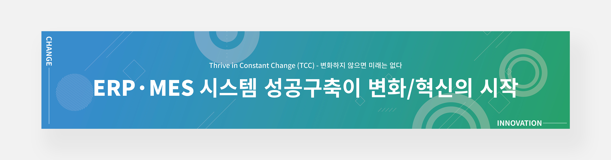

TCCSTEEL
ERP,MES 현수막디자인
OVERVIEW
TCCSTEEL에서 새로운 ERP·MES 시스템 구축 프로젝트 KICK-OFF를 알리는 현수막 디자인을 진행했습니다. 이 프로젝트에서는 신선하고 활발한 느낌을 전달하기 위해 컬러와 레이아웃에 변화를 주었습니다. 먼저, 컬러 선택에 신중히 고민하여 신선하고 활기찬 느낌을 주는 컬러를 활용했습니다. 밝고 생기 넘치는 컬러를 선택하여 프로젝트의 새로운 시작과 활동적인 분위기를 강조했습니다.
- TYPE.
- Editorial design
- CLIENT.
- TCCSTEEL ERP,MES 현수막디자인
- Individual work.
- 1Day
- 작업내역
- Photoshop, Illustrator
